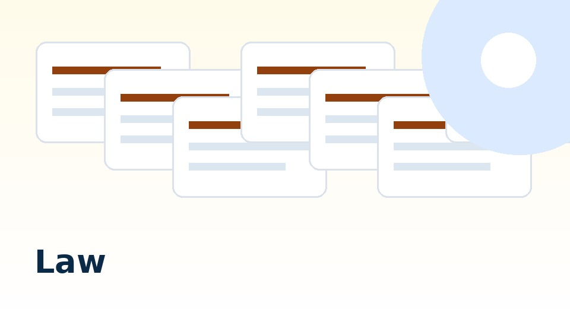

重要参考事例：横浜市教育委員会通知 学教第1965号
横浜市教育委員会は「PTA運営の留意点について」という通知を発出し、①PTAの任意加入性の周知、②学校からの個人情報提供の禁止、③学校徴収金とPTA会費の分離、④教職員のPTA業務の整理について、全校に具体的な指針を示しました。通知の内容・構造・法的根拠は他の教育委員会の参考になります。
教育委員会の権限と責任──対応の法的根拠
教育委員会がPTA問題に対応できる根拠は何か。「PTAは任意団体だから関知できない」という姿勢は、法的に正確ではありません。
教育委員会の管理執行権限（地教行法第21条）
地方教育行政の組織及び運営に関する法律（地教行法）第21条は、教育委員会が学校の管理・運営を行う権限を持つことを定めています。PTAそのものを管理する権限はありませんが、学校がPTAと関与している部分──個人情報の提供、会費の代理徴収、教職員の業務関与、施設の利用──については、学校管理の延長として対応する法的根拠があります。
社会教育法第10条・第12条との関係
PTAは社会教育法第10条に定める社会教育関係団体です。同法第12条は「国及び地方公共団体は、社会教育関係団体に対し、いかなる方法によつても、不当に統制的支配を及ぼし、又はその事業に干渉を加えてはならない」と定めています。教育委員会がPTAの組織・運営に直接介入することは「干渉」になる場合があります。しかし、学校側の関与部分（名簿提供・代理徴収・教職員業務）は、学校の管理として是正を求めることができます。
個人情報保護法との関係（2022年改正以降）
2022年の個人情報保護法改正により、学校・教育委員会も「個人情報取扱事業者」として同法の適用対象となりました。学校が保有する保護者・児童の個人情報をPTAへ提供することは、第18条（目的外利用禁止）・第69条（行政機関の目的外提供禁止）・第27条（第三者提供の制限）の観点から、違法行為となる可能性があります。教育委員会として各校の実態を調査し、問題がある場合は是正指導を行う責任があります。
一斉調査で確認すべき項目
各校PTAの現状を把握するための調査項目です。年度当初に校長を通じて確認することを推奨します。
| 確認項目 | 確認の観点 | 問題がある状態 |
|---|---|---|
| 入会意思確認の方法 | 入会申込書等の書面による明示的な意思確認が行われているか | 入学手続きと一体化・入会申込書なし・オプトアウト方式 |
| 学校からの名簿提供 | 学校が保有する保護者・児童情報のPTAへの提供の有無 | 根拠書類なし・本人同意なし・慣例として提供 |
| 会費徴収の方法 | PTAが直接徴収か、学校口座経由か。委任契約の有無 | 委任条項なし・業務委託契約なし・学校徴収金と同一書面 |
| 学校配布物へのPTA文書の混入 | 非会員を含む全保護者にPTA文書が配布されているか | 全保護者への配布・PTA加入が義務のような印象を与える文書 |
| 学校ICTシステムの利用 | 学校の連絡アプリ・メールでPTA通知が全保護者に配信されているか | 全保護者へのPTA通知配信・利用根拠なし |
| 教職員のPTA業務 | 勤務時間中のPTA業務の実態・校務分掌への記載・職専免の運用 | 校務として実質的にPTA業務を担う・職専免の記録なし |
| 非会員への対応 | 非会員の保護者・子どもに対する取り扱い | 行事参加制限・記念品不配布・教室での差別的扱い |
| PTAから学校への寄付 | PTAが学校・教育委員会に行う寄付の状況と条件 | 特定用途指定・毎年恒例化・学校予算補填的な運用 |
是正指導の方針──段階的アプローチ
全国の教育委員会の回答を分析すると、問題への対応に「放置」から「積極的是正指導」まで幅があることがわかります。当委員会は以下の段階的アプローチを推奨します。
-
実態の把握（調査）
上記の調査項目を使って各校の現状を把握する。調査結果を教育委員会として記録・分析する。 -
問題の整理（分類）
学校側の関与として是正できるもの（名簿提供・代理徴収・教職員業務・施設利用）と、PTAの自治に属するもの（会則・役員選出・活動内容）を分類する。 -
校長への指導（通知・研修）
学校側の是正事項について、校長向けに通知または研修で方針を示す。「任意加入の周知徹底」「個人情報の適正管理」「代理徴収の要件整備」を最優先事項として明示する。 -
PTAへの情報提供（支援）
直接介入はできないが、PTA向けの参考様式・チェックリスト・FAQ等を提供し、自発的な改善を促す。 -
苦情・照会への対応（窓口整備）
保護者・教職員からの照会窓口を明確にし、PTA問題に関する問い合わせに対して法令に基づいた正確な情報を提供する体制を整える。
通知・ガイドライン整備の指針
教育委員会として通知・ガイドラインを整備する場合、以下の項目を含めることを推奨します。
通知に含めるべき内容
- PTAは任意加入の社会教育関係団体であり、学校手続の一部ではないことの明示。
- PTA加入案内を入学手続書類に混在させないことの指示。
- 学校が保有する個人情報をPTAに提供しないことの禁止と根拠法令の明示。
- PTA会費と学校徴収金の分離を明示した上での代理徴収の要件（委任契約・委任条項）。
- 教職員がPTA業務に従事する場合の服務上の取扱い（職専免の適正運用・兼職兼業許可）。
- 非会員の保護者・子どもに対する教育機会均等の保障。
- PTAから学校への寄付に関する地方財政法上の注意事項。
全国の教育委員会回答から見える方向性
当委員会が収集した76自治体111件の回答では、「任意加入の周知徹底が必要」という点については回答した教育委員会のほぼ全てが肯定しています。一方、「学校として是正指導を行う」という点では、積極的な姿勢を示したものとそうでないものに分かれています。先進的な回答を示した教育委員会の見解は、他の教育委員会の参考になります。
公文書開示請求との関係
保護者・住民から、PTA関連の学校文書・教育委員会文書について公文書開示請求が行われるケースが増えています。
開示請求の対象となりうる文書
- 各学校のPTA入会案内・入会申込書の様式
- 学校とPTAの間の業務委託契約書（または委任契約書）
- 学校からPTAへの個人情報提供に関する書類
- 教職員のPTA業務に関する校務分掌・職専免承認記録
- PTA関連の校長会・教育委員会会議の議事録・通知文
- PTAから学校への寄付に関する書類
上記書類が適切に作成・保管されていない場合、開示請求で「存在しない」と回答せざるを得ない状況は、文書管理の問題として指摘を受けることになります。今から適切な書類の作成・保管を始めることが重要です。
教育委員会向けリンク
法令
関連ページ
